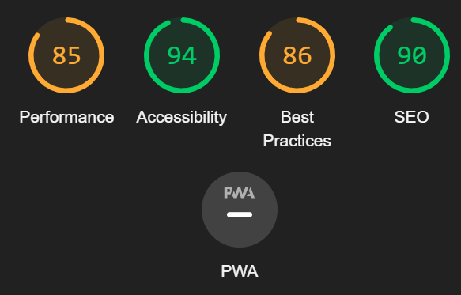
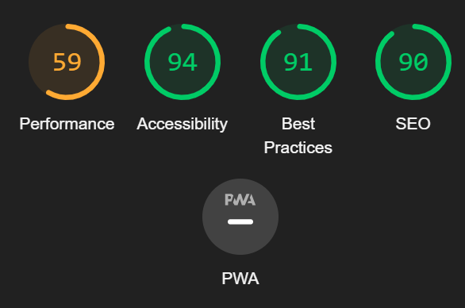
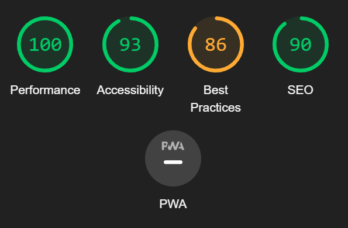
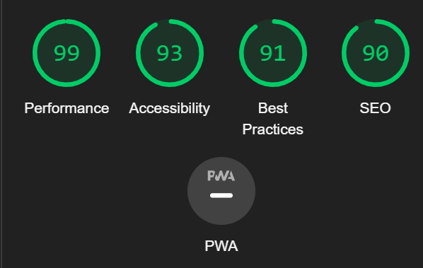
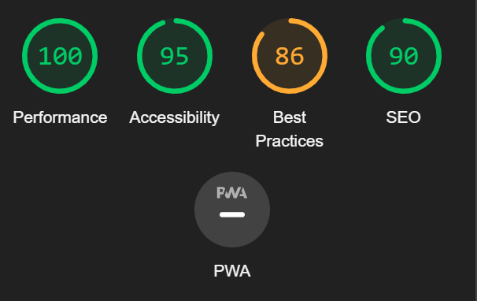

SEO Analyse
Forside - Desktop

Desktop-analyse viser en SEO-score på 90, noe som indikerer at siden er godt optimalisert for søkemotorer. Den høye scoren reflekterer bruk av semantisk HTML, tilstedeværelsen av metatagger, og tilpassede titler og beskrivelser for siden.
Forside - Mobile

Mobil-analyse viser en SEO-score på 90, noe som tyder på at mobilvisningen også er godt optimalisert. Dette antyder at siden bruker responsive designprinsipper og har rask lastetid, noe som er viktig for mobilbrukere.
Produktside - Desktop

For desktop visning oppnår produktsiden en imponerende 100 i Performance, noe som betyr at siden laster svært raskt og har optimalisert ressursbruk. Accessibility-scoren på 93 indikerer at siden er godt tilgjengelig for brukere med forskjellige behov. En score på 86 i Best Practices viser at det er noen få områder for forbedring i hvordan nettleserfunksjoner brukes og annen god kodepraksis. SEO-scoren på 90 viser at siden er godt optimalisert for søkemotorer, men kan muligens forbedres ytterligere med finjusteringer.
Produktside - Mobile

På mobil enheter scorer produktsiden nesten like høyt som på desktop, med en Performance på 99 som demonstrerer rask lasting og effektivt innholdsrendering på mobile enheter. Tilgjengeligheten holder seg stabil på 93, noe som understreker at siden også er tilrettelagt for brukere med tilgjengelighetsbehov på tvers av enheter. Best Practices-scoren på 91 er en indikasjon på at siden følger moderne webstandarder og praksiser også for mobile brukere. SEO-scoren på 90 sikrer at siden er velposisjonert for søkemotorsynlighet, selv når den blir tilgjengeliggjort på mobile enheter. PWA-indikatoren viser at applikasjonen tilbyr en nær-native brukeropplevelse på mobile enheter, men detaljene her vil kreve en dypere teknisk analyse for å forstå det fulle potensialet av PWA for produktsiden.
Produktdetaljside - Desktop

Denne Lighthouse-rapporten indikerer en eksepsjonell ytelse på 100 for desktop, noe som sikrer lynrask lastetid og optimal brukeropplevelse. Tilgjengeligheten scorer 95, noe som betyr at siden er godt tilrettelagt for brukere med ulike behov. Beste praksis-scoren på 86 fremhever et sterkt fokus på moderne og sikre standarder. SEO-scoren på 90 viser at siden er godt optimalisert for søkemotorer, og hjelper til med å forbedre organisk søkbarhet.
Produktdetaljside - Mobile

På mobil oppnår produktdetaljsiden en nesten perfekt ytelsesscore på 99, noe som viser til optimal lastetid og interaktivitet på mobile enheter. Tilgjengelighetsscoren på 95 bekrefter at innholdet er lett tilgjengelig for alle brukere, mens en score på 86 i beste praksis viser engasjement for brukersikkerhet og -opplevelse. Med en SEO-score på 90, er siden også mobil-vennlig og klar for søkemotorrangering.